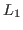

Tikhonov regularization for projected solutions of large-scale ill-posed problems is considered. The LSQR algorithm is used to project the problem onto a subspace and regularization then applied to find a subspace approximation to the full problem. Determination of the regularization parameter using the method of unbiased predictive risk estimation (UPRE) is considered and contrasted with the generalized cross validation and discrepancy principle techniques. Examining the unbiased predictive risk estimator for the projected problem, it is shown that the obtained regularized parameter provides a good estimate for that to be used for the full problem with the solution found on the projected space. The connection between regularization for full and projected systems for the discrepancy and generalized cross validation estimators is also discussed and an argument for the weight parameter in the weighted generalized cross validation approach is provided. All results are independent of whether systems are over or underdetermined, the latter of which has not been considered in discussions of regularization parameter estimation for projected systems.
Numerical simulations for standard one dimensional test problems and two dimensional data for both image restoration and tomographic image reconstruction support the analysis and validate the techniques. The size of the projected problem is found using an extension of a noise revealing function for the projected problem. Furthermore, an iteratively reweighted regularization (IRLS) approach for edge preserving regularization is extended for projected systems, providing stabilization of the solutions of the projected systems with respect to the determination of the size of the projected subspace.
This work is extended for sparse inversion of the large scale gravity problem with the

-type stabilizer using IRLS. The regularization parameter for the IRLS problem is estimated using the UPRE extended for the projected problem. Further analysis leads to an improvement of the projected UPRE via analysis based on truncation of the projected spectrum. Numerical results for synthetic examples and real field data demonstrate the efficiency of the method.